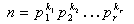
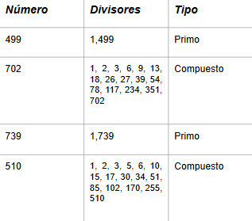

Teorema fundamental de la aritmetica
El teorema fundamental de la Aritmética nos dice, que todo número entero mayor o igual a 2 es un número primo o es producto de primos. Esta representación es única, salvo el orden de los factores.
Formula

donde, p1,p2 … pr son primos
k1,k2 … kr son enteros positivos
Se puede demostrar que si un entero n está escrito en la forma anterior,
entonces el número de sus divisores positivos viene dado por:
n = (k1+1)(k2+1)...(kr+1)
k Define el número de veces que se repite el divisor
Ejemplos
ejemplo 1
Vamos a tomar el número 2082, el cual tenemos que descomponer.
2082 |2
1041 |3
347 |347
1 ← descomposición correcta
Ejemplo propio
ejemplo 2
tomemos el número 60, el cual nos dejará ver mejor el ejemplo.
60 |2
30 |2
15 |3
5 |5
1 ← descomposición correcta
Ejemplo propio
Aplicación del formula
Ahora lo que haremos, será aplicar la fórmula anterior.
n = (k1+1)(k2+1)...(kr+1)
(2082) =(1+1)(1+1)(1+1)= 8
8 es el número de divisores
Recordemos que K es el número de veces que se repite, un número en la descomposición.
Aplicación del formula
Usamos la misma formula
n = (k1+1)(k2+1)...(kr+1)
(60) =(2+1)(1+1)(1+1)= 12
12 es el número de divisores
Nótese que el 2 se repite, por lo cual K cambia.
Tenga en cuenta que el orden de la descomposición no cambia. así se garantiza que la formula se puede aplicar
Teorema 2
Un entero positivo p >1 se denomina un ńumero primo si tiene exactamente dos divisores positivos a saber: 1 y p. Un entero positivo mayor que 1 que no es primo se denomina compuesto.
Ejemplos
Teniendo en cuenta el anterior teorema, ya sabemos cuántos divisores tiene, con esto conoceremos si el número es primo o compuesto.
